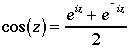
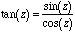

Because of the awkwardness that is inherent in dealing with opaque types, and because complex numbers are a basic numeric type, the ISO committee eventually decided to add support for an abstract type directly into the language.
The Modula-2 complex types are COMPLEX, LONGCOMPLEX, and the C-type.
The parts of a COMPLEX number can be thought of as corresponding to the type REAL and the parts of a LONGCOMPLEX number as corresponding to the type LONGREAL. C-type is the type of complex literals, in the same way that R-type is the type of the real literals.
There is a constructor and these are two component extractors for the complex types.
The Modula-2 complex constructor is CMPLX and the extractors are IM and RE.
All of COMPLEX, LONGCOMPLEX, CMPLX, RE, and IM are standard identifiers. CMPLX, RE, and IM work with all complex types, and the operations of addition, subtraction, multiplication and division are written in the same way as for all other numeric types and work on all complex types. (This is much more satisfying than in the last section.) All of the following are correct:
VAR r1, r2 : REAL; r3, r4 : LONGREAL; z1, z2 : COMPLEX; z3, z4 : LONGCOMPLEX; CONST zero = CMPLX (0.0, 0.0); i = CMPLX (0.0, 1.0); BEGIN z1 := CMPLX (2.0, 4.5); z2 := z1 + i; z3 := zero; z3 := z3 / CMPLX (1.0, 1.0); r3 := 5.7; r4 := 4.5; z4 := CMPLX (r3, r4); r1 := RE (z1); r2 := IM (z1);
A number of items are defined in an ISO standard support library for complex mathematics. If using the type COMPLEX, the library is called ComplexMath. The corresponding library for LONGCOMPLEX (which has exactly the same contents except all are LONG) is LongComplexMath. Here is the definition of ComplexMath:
DEFINITION MODULE ComplexMath;
(* =========================================
Definition Module from
ISO Modula-2
ISO/IEC IS10515 by JTC1/SC22/WG13
Original COMPLEX specification and
design of ComplexMath
Copyright © 1990-1991 by R. Sutcliffe
Assigned to the BSI for standards work
Last modification date 1994 08 31
===========================================*)
(* Mathematical functions for the type COMPLEX *)
CONST
i = CMPLX (0.0, 1.0);
one = CMPLX (1.0, 0.0);
zero = CMPLX (0.0, 0.0);
PROCEDURE abs (z: COMPLEX): REAL;
(* Returns the length of z *)
PROCEDURE arg (z: COMPLEX): REAL;
(* Returns the angle that z subtends to the positive real axis *)
PROCEDURE conj (z: COMPLEX): COMPLEX;
(* Returns the complex conjugate of z *)
PROCEDURE power (base: COMPLEX; exponent: REAL): COMPLEX;
(* Returns the value of the number base raised to the power exponent *)
PROCEDURE sqrt (z: COMPLEX): COMPLEX;
(* Returns the principal square root of z *)
PROCEDURE exp (z: COMPLEX): COMPLEX;
(* Returns the complex exponential of z *)
PROCEDURE ln (z: COMPLEX): COMPLEX;
(* Returns the principal value of the natural logarithm of z *)
PROCEDURE sin (z: COMPLEX): COMPLEX;
(* Returns the sine of z *)
PROCEDURE cos (z: COMPLEX): COMPLEX;
(* Returns the cosine of z *)
PROCEDURE tan (z: COMPLEX): COMPLEX;
(* Returns the tangent of z *)
PROCEDURE arcsin (z: COMPLEX): COMPLEX;
(* Returns the arcsine of z *)
PROCEDURE arccos (z: COMPLEX): COMPLEX;
(* Returns the arccosine of z *)
PROCEDURE arctan (z: COMPLEX): COMPLEX;
(* Returns the arctangent of z *)
PROCEDURE polarToComplex (abs, arg: REAL): COMPLEX;
(* Returns the complex number with the specified polar coordinates *)
PROCEDURE scalarMult (scalar: REAL; z: COMPLEX): COMPLEX;
(* Returns the scalar product of scalar with z *)
PROCEDURE IsCMathException (): BOOLEAN;
(* Returns TRUE if the current coroutine is in the exceptional execution state because of the raising of an exception in a routine from this module; otherwise returns FALSE. *)
END ComplexMath.
Here are a few observations about these contents (and how to implement them) that of course apply to both versions of the library:
The constants i, one, and zero
These constants are provided for convenience and are the implementation defined approximations to the specified values.
The procedure abs
A call to abs produces the implementation defined approximation to the Modulus, (or length, or absolute value) of the complex number. As indicated earlier, this is the distance in the complex plane from the origin to the point that represents the complex number. If z = a + bi, then . Note that an overflow exception may occur in performing this computation, even when the complex number is itself well defined. So, if one were implementing this function, a better approach to the calculation might be:
modulus (z) =
let t = max(RE(cmplx),IM(cmplx))
let u = min(RE(cmplx),IM(cmplx))
return a
end modulus
It can readily be seen with a little algebraic manipulation that the two expressions are equivalent, but the likelihood of an overflow is less in using the second.
The procedure arg
A call to arg produces the implementation defined approximation to the angle the complex number makes with the positive real axis in the complex plane:
If RE(cmplx) > 0 this yields arctan(IM(cmplx)/RE(cmplx)).
If RE(cmplx) < 0 it yields
pi-arctan(IM(cmplx)/RE(cmplx)) if IM(cmplx)>=0 and
-pi-arctan(IM(cmplx)/RE(cmplx)) if IM(cmplx)<0.
If RE(complx) = 0 it yields
pi/2 when IM(cmplx) > 0,
3pi/2 when IM(cmplx) < 0 and
is undefined (an exception occurs) if IM(cmplx) = 0 also.
That is, approximation values over the entire range of -pi < arg <= pi are produced.
The procedure conj
A call to conj with base = a + bi as parameter produces the implementation defined approximation to the complex conjugate of the parameter, that is to a - bi. This is useful in doing divisions by complex numbers.
The procedure power
A call to power with base = a + bi as complex parameter and exponent the real parameter produces the implementation defined approximation to the complex number base raised to the power exponent, that is, if z = a + bi, then
Recall that it is also the case that such numbers can be expressed as z = r(cos + isin
+ isin ), by Euler's formula:
), by Euler's formula:
zn = ( r ( cos  + i sin
+ i sin  ) )n = ( rei
) )n = ( rei )n = rn ein
)n = rn ein = rn ( cosn
= rn ( cosn  + i sin n
+ i sin n  )
)
In other words, the result of such an exponentiation is a complex number with modulus rn and argument n .
.
The procedure sqrt
There are, of course, two square roots to a complex number. For instance, both i and -i are square roots of -1. A call to sqrt (cmplx) produces the implementation defined approximation to the principal square root of the complex number. That is, the result is the complex number whose argument has minimum absolute value and where result * result equals cmplx.
The procedure exp
A call to exp with z = a + bi as parameter produces the implementation defined approximation to the exponential of a + bi, that is, to ea+bi = eaebi
The procedure ln
A call to ln with z = a + bi as parameter produces the implementation defined approximation to the principal value of the natural logarithm of a + bi. This can be found by observing that if ln(z) = a + bi and the natural logarithm is to be the inverse of exponentiation, then
z = elnz= ea+bi = eaebi = ea ( cos (b) + i sin (b) )
so that abs(z) = ea and arg(z) = b. This means that b = ln(abs(z)) and d = arg(z). That is, ln(z) = CMPLX (ln(abs(z)), arg(z)).In order to handle the trigonometric functions, one assumes the series discussed in section 17.1 apply and then expands both:
eiz = cos (z) + i sin (z)
e-iz = cos (z) - i sin (z)
Solving these as a system of equations for cos(z) and sin(z) produces the definitions used in the following:
The procedure sin
A call to sin with z = a + bi as parameter produces the implementation defined approximation to the sine of the parameter, which is defined as:
The procedure cos
A call to cos with z = a + bi as parameter produces the implementation defined approximation to the cosine of the parameter, which is defined as:

It is not difficult to verify that, as is the case for trigonometric functions taking real valued arguments, sin2(z) + cos2(z) = 1. The tangent function can be defined on complex numbers in the same way as it is on real numbers.
The procedure tan
A call to tan with z = a + bi as parameter produces the implementation defined approximation to the tangent of the parameter, which is defined as:
 unless z lies on the imaginary axis (has arg ¼/2 or 3¼/2) in which case there shall be an exception raised.
Turning attention to the inverse trigonometric functions, it is easy to require that on the domain for which they are defined, one must have
sin (Arcsin(z) ) = z and cos (Arccos(z)) = z.
Taking these and letting y = Arc sin (z) and y = Arc cos (z) for the moment (respectively), one solves for y in z = sin (y) and in z = cos(y) to obtain:
The negative values of the root in the quadratic formula are ignored at the third to last line in favour of using only the principal root in each case. Thus one has:
The procedure arcsin
A call to arcsin with z = a + bi as parameter produces the implementation defined approximation to the arcsine of the parameter, which is defined as the complex number whose argument has minimum absolute value and where sin (result) produces c. This may be expressed mathematically as:
The procedure arccos
A call to arccos with z = a + bi as parameter produces the implementation defined approximation to the arccosine of the parameter. That is, the result is the complex number whose argument has minimum absolute value and where cos (result) produces z. This may be expressed mathematically as:
In a similar manner, one assumes that tan(Arctan(z)) = z and works in a similar way to find a form for Arctan(z) as follows:
The procedure arctan
A call to arctan with z = a + bi as parameter produces the implementation defined approximation to the arctangent of the parameter. That is, the result is the complex number whose argument has minimum absolute value and where tan (result) produces z. This may be expressed mathematically as:
The procedure polarToComplex
A call to polarToComplex with parameters abs and arg produces the implementation defined approximation to the complex number having modulus equal to abs and argument equal to arg.
The procedure scalarMult
A call to scalarMult with the parameters scalar and cmplx produces the implementation defined approximation to the scalar product of the scalar and the complex number, that is mz = m (a + bi) = ma + mbi This result will have modulus mz and the same argument as z.
The actual code is now quite easy to produce. Note how short the procedures have become. This makes them easy to write, easy to understand, and easy to debug.
IMPLEMENTATION MODULE ComplexMath;
(* =========================================
Initial Coding by Gordon Tisher
Implementation © 1994
by R. Sutcliffe
Trinity Western University
7600 Glover Rd., Langley, BC Canada V2Y 1Y1
e-mail: rsutc@twu.ca
Last modification date 1996 12 13
===========================================*)
(* Mathematical functions for the type COMPLEX *)
(* original 1994 08 31 by GT
fixed a bug in arccos 1996 12 13 RS *)
(**************************
Imports
**************************)
FROM EXCEPTIONS IMPORT
ExceptionSource, RAISE, AllocateSource, IsCurrentSource, IsExceptionalExecution;
IMPORT RealMath;
(**************************
Constants
**************************)
CONST
twoi = CMPLX (0.0, 2.0);
(**************************
Global variables
**************************)
VAR
mathExceptionSource : ExceptionSource;
(**************************
Procedures
**************************)
PROCEDURE abs (z: COMPLEX): REAL;
(* Returns the length of z *)
VAR
re, im : REAL;
BEGIN
re := RE (z);
im := IM (z);
RETURN RealMath.sqrt ( (re*re) + (im*im) );
END abs;
PROCEDURE arg (z: COMPLEX): REAL;
(* Returns the angle that z subtends to the positive real axis *)
VAR
re, im : REAL;
BEGIN
re := RE (z);
im := IM (z);
IF im > 0.0
THEN
IF re > 0.0
THEN
RETURN RealMath.arctan ( im/re );
ELSIF re < 0.0 THEN
RETURN RealMath.pi + RealMath.arctan ( im/re );
ELSE
RETURN RealMath.pi / 2.0;
END; (* if *)
ELSIF im < 0.0 THEN
IF re > 0.0
THEN
RETURN RealMath.arctan ( im/re );
ELSIF re < 0.0 THEN
RETURN -RealMath.pi + RealMath.arctan ( im/re );
ELSE
RETURN -RealMath.pi / 2.0;
END; (* IF *)
ELSE
IF re > 0.0
THEN
RETURN 0.0;
ELSIF re < 0.0 THEN
RETURN RealMath.pi;
ELSE
RAISE (mathExceptionSource, 0, "ComplexMath.arg: zero value");
END; (* IF *)
END (* IF *)
END arg;
PROCEDURE conj (z: COMPLEX): COMPLEX;
(* Returns the complex conjugate of z *)
BEGIN
RETURN CMPLX ( RE (z), -IM (z) );
END conj;
PROCEDURE power (base: COMPLEX; exponent: REAL): COMPLEX;
(* Returns the value of the number base raised to the power exponent *)
VAR
pow : REAL;
expTheta, temp : COMPLEX;
tempRe, tempIm : REAL;
BEGIN
expTheta := CMPLX (exponent * arg (base), 0.0);
temp := cos (expTheta) + i * sin (expTheta);
pow := RealMath.power ( abs (base), exponent );
tempRe := pow * RE (temp);
tempIm := pow * IM (temp);
RETURN CMPLX (tempRe, tempIm);
END power;
PROCEDURE sqrt (z: COMPLEX): COMPLEX;
(* Returns the principal square root of z *)
VAR
temp : COMPLEX;
tempRe, tempIm : REAL;
BEGIN
tempRe := RealMath.cos ( arg (z) / 2.0 );
tempIm := RealMath.sin ( arg (z) / 2.0 );
tempRe := tempRe * RealMath.sqrt ( abs (z) );
tempIm := tempIm * RealMath.sqrt ( abs (z) );
RETURN CMPLX ( tempRe, tempIm );
END sqrt;
PROCEDURE exp (z: COMPLEX): COMPLEX;
(* Returns the complex exponential of z *)
VAR
temp, outZ : COMPLEX;
expR,
re, im : REAL;
BEGIN
re := RealMath.cos ( IM (z) );
im := RealMath.sin ( IM (z) );
expR := RealMath.exp (RE (z));
re := re * expR;
im := im * expR;
outZ := CMPLX (re, im);
RETURN outZ;
END exp;
PROCEDURE ln (z: COMPLEX): COMPLEX;
(* Returns the principal value of the natural logarithm of z *)
VAR
tempRe, tempIm : REAL;
BEGIN
tempRe := RealMath.ln ( abs (z) );
tempIm := arg (z);
RETURN CMPLX ( tempRe, tempIm );
END ln;
PROCEDURE sin (z: COMPLEX): COMPLEX;
(* Returns the sine of z *)
BEGIN
RETURN ( exp (i * z) - exp (-i * z) ) / CMPLX (0.0, 2.0);
END sin;
PROCEDURE cos (z: COMPLEX): COMPLEX;
(* Returns the cosine of z *)
BEGIN
RETURN ( exp (i * z) + exp (-i * z) ) / CMPLX (2.0, 0.0);
END cos;
PROCEDURE tan (z: COMPLEX): COMPLEX;
(* Returns the tangent of z *)
BEGIN
IF (RE (z) = (RealMath.pi / 2.0) + RealMath.pi) AND (IM (z) = 0.0)
THEN
RAISE (mathExceptionSource, 0, "ComplexMath.tan: overflow");
END; (* if *)
RETURN sin (z) / cos (z);
END tan;
PROCEDURE arcsin (z: COMPLEX): COMPLEX;
(* Returns the arcsine of z *)
BEGIN
RETURN ( one / i ) * ln (i * z + sqrt (one - z * z));
END arcsin;
PROCEDURE arccos (z: COMPLEX): COMPLEX;
(* Returns the arccosine of z *)
BEGIN
RETURN (one / i) * ln (z + sqrt (z * z - one));
END arccos;
PROCEDURE arctan (z: COMPLEX): COMPLEX;
(* Returns the arctangent of z *)
BEGIN
RETURN (one / (twoi)) * ln ((one + i*z) / (one - i*z));
END arctan;
PROCEDURE polarToComplex (abs, arg: REAL): COMPLEX;
(* Returns the complex number with the specified polar coordinates *)
VAR
tempRe, tempIm : REAL;
BEGIN
tempRe := abs * RealMath.cos (arg);
tempIm := abs * RealMath.sin (arg);
RETURN CMPLX (tempRe, tempIm);
END polarToComplex;
PROCEDURE scalarMult (scalar: REAL; z: COMPLEX): COMPLEX;
(* Returns the scalar product of scalar with z *)
VAR
tempRe, tempIm : REAL;
BEGIN
tempRe := RE (z) * scalar;
tempIm := IM (z) * scalar;
RETURN CMPLX (tempRe, tempIm);
END scalarMult;
PROCEDURE IsCMathException (): BOOLEAN;
(* Returns TRUE if the current coroutine is in the exceptional execution state because of the raising of an exception in a routine from this module; otherwise returns FALSE. *)
BEGIN
RETURN IsExceptionalExecution () AND IsCurrentSource (mathExceptionSource);
END IsCMathException;
BEGIN (* main *)
AllocateSource (mathExceptionSource);
END ComplexMath.
The nearly identical LongComplexMath need not be reproduced here.
The ISO standard does not define a standard library module for I/O. However, it is easy to write one, based on the procedures in RealIO and LongIO and the simple procedure employed in the examples of the last section. As for the standard I/O suite, define libraries for both specified channels and for standard channels.
DEFINITION MODULE ComplexIO;
(* =========================================
© 1996 by R. Sutcliffe
Last modification date 1996 10 30
===========================================*)
(* Input and output of complex numbers in decimal text form over specified channels. The read result is of the type IOConsts.ReadResults. *)
IMPORT IOChan;
(* The text form of a complex number is
realNumber, [space], ["+" | "-"], [space,] [realnumber, i] |
[realNumber, [space],] ["+" | "-"], [space,] realnumber, i
where the real numbers in each case are in the
format specified for fixed or floating reals.
*)
PROCEDURE ReadComplex (cid: IOChan.ChanId; VAR complex: COMPLEX);
(* Skips leading spaces, and removes any remaining characters from cid that form part of a complex number. The value of this number is assigned to complex. The read result is set to the value allRight, outOfRange, wrongFormat, endOfLine, or endOfInput. *)
(* following procedure affects all the Write procs below *)
PROCEDURE SetVerbose (verbose : BOOLEAN);
(* if true prints both components even if one is zero; else prints only one if the other is zero. The default is false. *)
PROCEDURE WriteFloat (cid: IOChan.ChanId; complex: COMPLEX; sigFigs: CARDINAL; width: CARDINAL);
(* Writes the value of complex to cid in floating-point real text form, with sigFigs significant figures, in a field of the given minimum width. The width for the real parts is 0 if the supplied width is 3 or less, and it is (width - 4) DIV 2 otherwise. *)
PROCEDURE WriteEng (cid: IOChan.ChanId; complex: COMPLEX; sigFigs: CARDINAL; width: CARDINAL);
(* As for WriteFloat, except that the number is scaled with one to three
digits in the whole number part, and with an exponent that is a multiple of three. *)
PROCEDURE WriteFixed (cid: IOChan.ChanId; complex: COMPLEX; place: INTEGER; width: CARDINAL);
(* Writes the value of complex to cid in fixed-point text form, with real parts rounded to the given place relative to the decimal point, in a field of the given minimum width. *)
PROCEDURE WriteComplex (cid: IOChan.ChanId; complex: COMPLEX; width: CARDINAL);
(* Writes the value of complex to cid, as WriteFixed if the sign and magnitude can be shown in the given width, or otherwise as WriteFloat. The number of places or significant digits depends on the given width. *)
END ComplexIO.
The procedure SetVerbose changes an internal setting to allow client modules to specify whether complex numbers in which one component is zero should have both components written out or only one. To keep things simple, the default is that verbose is FALSE, and the option of changing it has been eliminated from the SComplexIO module, so that if verbose output is required, the user must import from the ComplexIO module. Here, the corresponding module for standard channels is abbreviated.
DEFINITION MODULE SComplexIO;
(* =========================================
© 1996 by R. Sutcliffe
Last modification date 1996 10 30
===========================================*)
(* Input and output of complex numbers in decimal text form over the default channels. The read result is of the type IOConsts.ReadResults. *)
IMPORT IOChan;
PROCEDURE ReadComplex (VAR complex: COMPLEX);
PROCEDURE WriteFloat (complex: COMPLEX; sigFigs: CARDINAL; width: CARDINAL);
PROCEDURE WriteEng (complex: COMPLEX; sigFigs: CARDINAL; width: CARDINAL);
PROCEDURE WriteFixed (complex: COMPLEX; place: INTEGER; width: CARDINAL);
PROCEDURE WriteComplex (complex: COMPLEX; width: CARDINAL);
END SComplexIO.
The only tricky part of the implementation is the procedure ReadComplex. This was done in such a way that complex numbers such as 2-i, 3 + 5i, -7i, and 56.7 would all be read correctly. That is, reading will work whether there are spaces or not between the parts and whether both parts are present or not. Observe that this means one cannot rely on ReadReal to read the sign of the part; that has to be done before handing off control to ReadReal. Likewise, the presence of a bare i has to be checked for before looking for a real number.
IMPLEMENTATION MODULE ComplexIO;
(* =========================================
© 1996 by R. Sutcliffe
Last modification date 1996 10 30
===========================================*)
(* Input and output of complex numbers in decimal text form over specified channels. The read result is of the type IOConsts.ReadResults. *)
IMPORT IOChan, RealIO, IOResult;
FROM TextIO IMPORT
WriteString, WriteChar, ReadChar;
FROM IOResult IMPORT
ReadResults;
VAR
gverbose : BOOLEAN; (* affects all writing procs *)
PROCEDURE ReadComplex (cid: IOChan.ChanId; VAR complex: COMPLEX);
(* Skips leading spaces, and removes any remaining characters from cid that form part of a complex number. The value of this number is assigned to complex. The read result is set to the value allRight, outOfRange, wrongFormat, endOfLine, or endOfInput. *)
VAR
re, im : REAL;
ch: CHAR;
neg : BOOLEAN;
res : IOResult.ReadResults;
BEGIN
IOChan.Look (cid, ch, res);
IF res = allRight
THEN
neg := (ch = "-");
IF (ch = "+") OR (ch = "-")
THEN (* go around leading sign *)
IOChan.SkipLook (cid, ch, res);
END;
IF (ch = "i") OR (ch = "I") (* case of bare i *)
THEN
re := 1.0
ELSE (* not a bare i so get number *)
RealIO.ReadReal (cid, re); (* also kills any leading spaces *)
IF IOResult.ReadResult (cid) = allRight
THEN
(* skip any more space there may be before next token *)
IOChan.Look (cid, ch, res);
WHILE (ch = " ") AND (res = allRight)
DO
IOChan.SkipLook (cid, ch, res);
END; (* while *)
END (* if IOResult *)
END; (* if ch *)
IF neg
THEN
re := - re;
END; (* if neg *)
(* now, we could be holding an i here *)
IF (ch = "i") OR (ch = "I")
THEN (* yes, so pure imaginary *)
IOChan.Skip (cid); (* skip that char *)
complex := CMPLX (0.0, re);
RETURN; (* and done *)
ELSIF (ch # "+") AND (ch # "-") THEN
(* this means pure real, no imaginary part; so leave that char for next guy *)
(* set it up as pure real *)
complex := CMPLX (re, 0.0);
RETURN; (* and done *)
END; (* if ch *)
(* ok, we get here only if we got the first real ok and a + or a - afterwards *)
neg := (ch = "-");
IOChan.SkipLook (cid, ch, res); (* skip that sign char *)
WHILE (ch = " ") AND (res = allRight) (* skip and spaces here *)
DO
IOChan.SkipLook (cid, ch, res);
END; (* while *)
(* now, they might have a + in the middle and then a sign on the real.
This is a bit dumb, but logical in a way. *)
IOChan.Look (cid, ch, res); (* there had better be something there *)
IF res = allRight
THEN (* adjust neg if needed *)
neg := (neg OR (ch = "-")) AND NOT (neg AND (ch = "-"));
IF (ch = "+") OR (ch = "-")
THEN (* go around thisleading sign too *)
IOChan.SkipLook (cid, ch, res);
END;
IF (ch = "i") OR (ch = "I") (* check case of bare i *)
THEN
im := 1.0
ELSE (* not a bare i so get number *)
RealIO.ReadReal (cid, im);
IF IOResult.ReadResult (cid) = allRight (* got second real *)
THEN
(* must be followed by an i or bad format *)
ReadChar (cid, ch);
IF (ch # "i") AND (ch # "I")
THEN
IOChan.SetReadResult (cid, wrongFormat);
RETURN;
END; (* if ch *)
END; (* if IOResult *)
END; (* if ch *)
IF neg
THEN
im := - im;
END; (* if neg *)
(* we only get here if all went OK for two numbers read *)
complex := CMPLX (re, im);
ELSE (* nothing there at all *)
IOChan.SetReadResult (cid, wrongFormat);
END; (* if res *)
ELSE (* bad second number *)
IOChan.SetReadResult (cid, wrongFormat);
END; (* first if res *)
END ReadComplex;
(* following procedure affects all the Write procs below *)
PROCEDURE SetVerbose (verbose : BOOLEAN);
(* if true prints both components even if one is zero; else prints only one if the other is zero. The default is false. *)
BEGIN
gverbose := verbose;
END SetVerbose;
PROCEDURE WriteFloat (cid: IOChan.ChanId; complex: COMPLEX; sigFigs: CARDINAL; width: CARDINAL);
(* Writes the value of complex to cid in floating-point real text form, with sigFigs significant figures, in a field of the given minimum width. The width for the real parts is 0 if the supplied width is 3 or less, and it is (width - 4) DIV 2 otherwise. *)
VAR
realFlen : CARDINAL;
re, im : REAL;
BEGIN
re := RE (complex);
im := IM (complex);
IF width < 4
THEN
realFlen := 0;
ELSE
realFlen := (width - 4) DIV 2;
END;
IF gverbose OR (re # 0.0) OR (im = 0.0)
THEN
RealIO.WriteFloat (cid, re, sigFigs, realFlen);
END;
IF gverbose OR (im # 0.0) (* decide if to print more *)
THEN (* yes, see if space needed *)
IF gverbose OR (re # 0.0)
THEN
WriteChar (cid, " ");
END;
IF im < 0.0
THEN (* always print negative sign *)
WriteChar (cid, "-");
ELSIF gverbose OR (re # 0.0) THEN
WriteChar (cid, '+'); (* space only *)
END;
IF gverbose OR (re # 0.0)
THEN
WriteChar (cid, " ");
END;
RealIO.WriteFloat (cid, ABS (im), sigFigs, realFlen);
WriteChar (cid, 'i');
END (* first if gverbose *)
END WriteFloat;
PROCEDURE WriteEng (cid: IOChan.ChanId; complex: COMPLEX; sigFigs: CARDINAL; width: CARDINAL);
(* As for WriteFloat, except that the number is scaled with one to three
digits in the whole number part, and with an exponent that is a multiple of three. *)
VAR
realFlen : CARDINAL;
re, im : REAL;
BEGIN
re := RE (complex);
im := IM (complex);
IF width < 4
THEN
realFlen := 0;
ELSE
realFlen := (width - 4) DIV 2;
END;
IF gverbose OR (re # 0.0) OR (im = 0.0)
THEN
RealIO.WriteEng (cid, re, sigFigs, realFlen);
END;
IF gverbose OR (im # 0.0) (* decide if to print more *)
THEN (* yes, see if space needed *)
IF gverbose OR (re # 0.0)
THEN
WriteChar (cid, " ");
END;
IF im < 0.0
THEN (* always print negative sign *)
WriteChar (cid, "-");
ELSIF gverbose OR (re # 0.0) THEN
WriteChar (cid, '+'); (* space only *)
END;
IF gverbose OR (re # 0.0)
THEN
WriteChar (cid, " ");
END;
RealIO.WriteEng (cid, ABS (im), sigFigs, realFlen);
WriteChar (cid, 'i');
END (* first if gverbose *)
END WriteEng;
PROCEDURE WriteFixed (cid: IOChan.ChanId; complex: COMPLEX; place: INTEGER; width: CARDINAL);
(* Writes the value of complex to cid in fixed-point text form, with real parts rounded to the given place relative to the decimal point, in a field of the given minimum width. *)
VAR
realFlen : CARDINAL;
re, im : REAL;
BEGIN
re := RE (complex);
im := IM (complex);
IF width < 4
THEN
realFlen := 0;
ELSE
realFlen := (width - 4) DIV 2;
END;
IF gverbose OR (re # 0.0) OR (im = 0.0)
THEN
RealIO.WriteFixed (cid, re, place, realFlen);
END;
IF gverbose OR (im # 0.0) (* decide if to print more *)
THEN (* yes, see if space needed *)
IF gverbose OR (re # 0.0)
THEN
WriteChar (cid, " ");
END;
IF im < 0.0
THEN (* always print negative sign *)
WriteChar (cid, "-");
ELSIF gverbose OR (re # 0.0) THEN
WriteChar (cid, '+'); (* space only *)
END;
IF gverbose OR (re # 0.0)
THEN
WriteChar (cid, " ");
END;
RealIO.WriteFixed (cid, ABS (im), place, realFlen);
WriteChar (cid, 'i');
END (* first if gverbose *)
END WriteFixed;
PROCEDURE WriteComplex (cid: IOChan.ChanId; complex: COMPLEX; width: CARDINAL);
(* Writes the value of complex to cid, as WriteFixed if the sign and magnitude can be shown in the given width, or otherwise as WriteFloat. The number of places or significant digits depends on the given width. *)
(* Of the space provided in width, four places are needed to write the + between the two reals, and one to write the letter i. The rest is divided equally between the two reals. *)
VAR
realFlen : CARDINAL;
re, im : REAL;
BEGIN
re := RE (complex);
im := IM (complex);
IF width < 4
THEN
realFlen := 0;
ELSE
realFlen := (width - 4) DIV 2;
END;
IF gverbose OR (re # 0.0) OR (im = 0.0)
THEN
RealIO.WriteReal (cid, re, realFlen);
END;
IF gverbose OR (im # 0.0) (* decide if to print more *)
THEN (* yes, see if space needed *)
IF gverbose OR (re # 0.0)
THEN
WriteChar (cid, " ");
END;
IF im < 0.0
THEN (* always print negative sign *)
WriteChar (cid, "-");
ELSIF gverbose OR (re # 0.0) THEN
WriteChar (cid, '+'); (* space only *)
END;
IF gverbose OR (re # 0.0)
THEN
WriteChar (cid, " ");
END;
RealIO.WriteReal (cid, ABS (im), realFlen);
WriteChar (cid, 'i');
END (* first if gverbose *)
END WriteComplex;
BEGIN (* main body *)
gverbose := FALSE;
END ComplexIO.
Once this is done, the implementation of the SComplexIO module is quite straightforward.
IMPLEMENTATION MODULE SComplexIO;
(* =========================================
© 1996 by R. Sutcliffe
Last modification date 1996 10 30
===========================================*)
IMPORT StdChans, ComplexIO;
PROCEDURE ReadComplex (VAR complex: COMPLEX);
BEGIN
ComplexIO.ReadComplex (StdChans.InChan(), complex);
END ReadComplex;
PROCEDURE WriteFloat (complex: COMPLEX; sigFigs: CARDINAL; width: CARDINAL);
BEGIN
ComplexIO.WriteFloat (StdChans.OutChan(), complex, sigFigs, width);
END WriteFloat;
PROCEDURE WriteEng (complex: COMPLEX; sigFigs: CARDINAL; width: CARDINAL);
BEGIN
ComplexIO.WriteEng (StdChans.OutChan(), complex, sigFigs, width);
END WriteEng;
PROCEDURE WriteFixed (complex: COMPLEX; place: INTEGER; width: CARDINAL);
BEGIN
ComplexIO.WriteFixed (StdChans.OutChan(), complex, place, width);
END WriteFixed;
PROCEDURE WriteComplex (complex: COMPLEX; width: CARDINAL);
BEGIN
ComplexIO.WriteComplex (StdChans.OutChan(), complex, width);
END WriteComplex;
END SComplexIO.
From these, it is also rather a simple matter to produce modules called LongComplexIO and SLongComplexIO. These will not be reproduced here. A small test harness illustrates some of the combinations. For the first group of numbers, verbose is turned on; for the second group, only one form of output is used, and verbose is off.
MODULE TestComplexIO;
(* by R. Sutcliffe
to test ComplexIO modified 1996 11 01 *)
FROM SComplexIO IMPORT
ReadComplex, WriteComplex, WriteFixed, WriteFloat, WriteEng;
FROM ComplexIO IMPORT
SetVerbose;
FROM ComplexMath IMPORT
zero;
FROM STextIO IMPORT
WriteString, WriteLn, SkipLine;
VAR
z : COMPLEX;
BEGIN
SetVerbose (TRUE);
REPEAT
WriteString ("Type complex; zero to go on ");
ReadComplex (z);
SkipLine;
WriteString ("complex z is: ");
WriteLn;
WriteFixed (z, 6, 26);
WriteLn;
WriteFloat (z, 10, 26);
WriteLn;
WriteEng (z, 10, 26);
WriteLn;
WriteComplex (z, 26);
WriteLn;
WriteLn;
UNTIL z = zero;
SetVerbose (FALSE);
REPEAT
WriteString ("Type complex ");
ReadComplex (z);
SkipLine;
WriteComplex (z, 26);
WriteLn;
UNTIL z = zero;
END TestComplexIO.
Observe the variety of inputs and outputs used to test the library. As usual;, inputs are highlighted in bold to distinguish them.
Type complex; zero to go on 1
complex z is:
1.000000 + 0.00000i
1.000000000E+00 + 0.000000000E+00i
1.000000000E+00 + 0.000000000E+00i
1.000000000 + 0.00000E+00i
Type complex; zero to go on 3i
complex z is:
0.00000 + 3.000000i
0.000000000E+00 + 3.000000000E+00i
0.000000000E+00 + 3.000000000E+00i
0.00000E+00 + 3.000000000i
Type complex; zero to go on 2-5i
complex z is:
2.000000 - 5.000000i
2.000000000E+00 - 5.000000000E+00i
2.000000000E+00 - 5.000000000E+00i
2.000000000 - 5.000000000i
Type complex; zero to go on 0
complex z is:
0.00000 + 0.00000i
0.000000000E+00 + 0.000000000E+00i
0.000000000E+00 + 0.000000000E+00i
0.00000E+00 + 0.00000E+00i
Type complex 1
1.000000000
Type complex 2i
2.000000000i
Type complex 3-i
3.000000000 - 1.000000000i
Type complex 7 +5i
7.000000000 + 5.000000000i
Type complex -i
-1.000000000i
Type complex 0
0.00000E+00